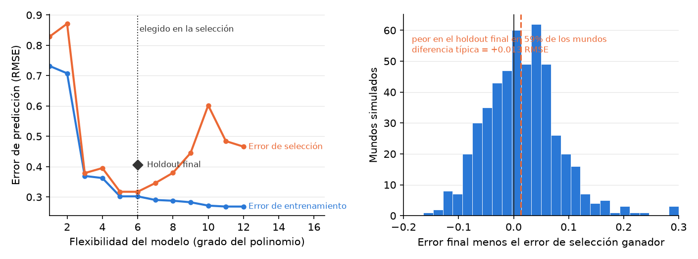

14 Predicción y generalización
Este capítulo forma parte de un libro en desarrollo activo y todavía no ha pasado por la revisión del autor. El contenido puede cambiar a medida que avanza la revisión.

La decisión de investigación. Decide si tu pregunta es de verdad un pronóstico sobre casos que nadie ha visto todavía y, si lo es, firma un contrato de cuatro partes antes de ajustar nada: objetivo, línea base, partición, métrica, más una revisión de fuga de datos. Ese contrato es lo que te permite defender un puntaje modesto y honesto, y decir en voz alta dónde deja de funcionar tu pronóstico.
14.1 Por qué importa esta decisión
La decisión sobre la mesa: si estás pronosticando casos no vistos y, si es así, qué puntaje aceptarías como honesto.
Imagina a la persona a cargo de salud pública de un condado, que debe decidir semana a semana si publica un aviso para no nadar en un lago. Las floraciones de cianobacterias pueden convertir una playa segura en un riesgo sanitario en cuestión de días. Llega un proveedor con un modelo que detecta floraciones dañinas “con 94% de exactitud”.
“¿Noventa y cuatro por ciento comparado con QUÉ? Casi todas las semanas este lago está bien, así que si digo ‘no hay floración’ todas las semanas ya acierto más o menos el ochenta y cinco por ciento de las veces. Si su modelo no supera eso con claridad, y no demuestra que lo hizo en semanas que nunca estudió, no voy a cerrar una playa pública porque él lo diga.” — una responsable de salud pública a quien ya la quemó un número impresionante
Esa responsable hace las dos preguntas que este capítulo te entrena a responder antes de confiar en cualquier pronóstico. ¿Es mejor que la regla honesta más tonta, y se lo ganó en casos que el modelo nunca vio? Falla en cualquiera de las dos y gritarás “¡lobo!” o dejarás pasar un riesgo real.
14.2 El concepto
Una predicción es la mejor conjetura sobre un caso cuyo resultado todavía no puedes ver. Ejemplo: pronosticar si un lago florecerá la semana que viene, antes de que exista la semana que viene. La predicción es descriptiva, no causal. Pronostica qué pasará, nunca por qué.
Lo que hace de la predicción una pregunta propia es su alcance, los casos que una afirmación pretende cubrir. El alcance de la predicción son los casos no vistos, unidades que no están en tus datos y cuyo resultado sigue siendo desconocido, como las muestras del mes que viene. Su prima es la generalización, el alcance que va de tu muestra a una población más amplia, por ejemplo de los doce lagos que mediste a todos los lagos de la cuenca. Ambas van más allá de los datos que tienes en la mano, y ambas son honestas solo cuando puedes nombrar el cruce que las autoriza.
Un pronóstico se gana la confianza bajo un contrato de cuatro partes, en orden fijo. El objetivo es la única columna que predices, por ejemplo bloom_next_week. La línea base es la regla honesta más tonta que tienes que superar, casi siempre “adivina siempre la respuesta más común”; si el 85% de las semanas no tiene floración, esa regla saca 85% gratis, así que 85% es la vara. La partición divide las filas en un conjunto de entrenamiento del que el modelo aprende y un conjunto reservado para prueba (held-out), filas que se apartan durante el entrenamiento y se usan solo como su examen, digamos una cuarta parte aleatoria de las semanas. La métrica es cómo llevas el marcador, ajustada al objetivo; la exactitud engaña cuando las floraciones son raras, así que la sensibilidad sobre la clase con floración, la proporción de floraciones reales que el modelo detecta, suele importar más.
Hay una trampa por encima de todas. La fuga de datos es una característica que carga información que no tendrías en el momento del pronóstico, porque su valor queda fijado solo en el momento del resultado o después. Ejemplo: la concentración de toxinas medida durante la floración. Una característica filtrada infla tu puntaje con los datos de hoy y se derrumba con los de mañana, porque no existirá cuando de verdad necesites el pronóstico.
14.3 Un ejemplo resuelto
Supón que quieres avisar con una semana de anticipación a quienes nadan. Tu objetivo es bloom_next_week, uno si el lago supera el umbral del aviso y cero si no. A lo largo de tres veranos de muestras semanales, el 85% de las semanas está limpio, así que tu línea base, “di siempre que no hay floración”, saca 0.85 sin modelo alguno.
Te quedas con características que de verdad se conocen con una semana de anticipación: temperatura del agua, lluvia reciente, carga de fósforo aguas arriba. Ajustas un modelo logístico (un clasificador estándar de sí o no), apartas con la partición una cuarta parte reservada de las semanas y calificas ambos solo en esas semanas reservadas. El modelo cae alrededor de 0.88. Esa ventaja de cuatro puntos se siente pequeña, y su pequeñez es el resultado honesto: un triunfo modesto y verdadero vale más que uno dramático y falso.
Entonces alguien con buenas intenciones agrega chlorophyll_a, la lectura del pigmento. La exactitud en el conjunto reservado salta a 0.97. Emocionante, hasta que preguntas cuándo se mide la clorofila: durante la floración misma que estás pronosticando. Es el resultado disfrazado con otra etiqueta. Quítala, y el puntaje vuelve a 0.88. Lo que decide es la prueba del momento, no la exactitud. Y como entrenaste en un lago poco profundo, nombras la frontera en voz alta: en un embalse profundo y frío el patrón puede no sostenerse, así que el pronóstico todavía no generaliza ahí.
14.4 Una simulación con semilla
El capítulo afirma que un modelo puede volverse mejor en los datos que tiene mientras se vuelve peor en los casos que nunca vio. Míralo suceder. La semilla hace la corrida reproducible: el mismo código siempre extrae el mismo mundo. El código construye un mundo (una curva seno más ruido), extrae de ese mismo mundo un conjunto de entrenamiento y un conjunto de prueba, ajusta al entrenamiento polinomios de flexibilidad creciente, y evalúa cada ajuste en ambos conjuntos.
import numpy as np
import matplotlib.pyplot as plt
SEED = 464
rng = np.random.default_rng(SEED)
def mundo(n):
x = rng.uniform(-3, 3, n)
return x, np.sin(1.5 * x) + rng.normal(0, .35, n)
x_entren, y_entren = mundo(40)
x_prueba, y_prueba = mundo(40)
grados = np.arange(1, 13)
err_entren, err_prueba = [], []
for g in grados:
coefs = np.polyfit(x_entren, y_entren, g)
err_entren.append(np.sqrt(np.mean(
(np.polyval(coefs, x_entren) - y_entren) ** 2)))
err_prueba.append(np.sqrt(np.mean(
(np.polyval(coefs, x_prueba) - y_prueba) ** 2)))
mejor = grados[int(np.argmin(err_prueba))]
fig, ax = plt.subplots(figsize=(7.6, 3.4))
ax.plot(grados, err_entren, color="#2a78d6", lw=2, marker="o", ms=4)
ax.plot(grados, err_prueba, color="#eb6834", lw=2, marker="o", ms=4)
ax.axvline(mejor, color="#333333", ls=":", lw=1)
ax.text(grados[-1], err_entren[-1], " Error de entrenamiento",
color="#2a78d6", fontsize=9, va="center")
ax.text(grados[-1], err_prueba[-1], " Error en el conjunto de prueba",
color="#eb6834", fontsize=9, va="center")
ax.text(mejor + .1, max(err_prueba) * .95, "mejor honesto",
color="#333333", fontsize=9)
ax.set_xlabel("Flexibilidad del modelo (grado del polinomio)")
ax.set_ylabel("Error de predicción (RMSE)")
ax.set_xlim(grados[0], grados[-1] + 3.4)
plt.show()
El error de entrenamiento azul solo baja: cada grado extra de flexibilidad deja que el modelo se curve más cerca de los puntos que ya vio. El error de prueba naranja baja mientras el modelo aprende señal, toca fondo cerca del grado seis, y sube cuando el modelo empieza a memorizar ruido. La línea punteada es el mejor honesto: la flexibilidad que elegiría una comprobación con datos apartados. Nada en la línea azul sola te diría que pares ahí; solo datos que el ajuste nunca tocó pueden decirlo, y ese es el argumento completo de la comprobación con datos apartados que exige esta ruta. En el cuaderno de acompañamiento, sube el ruido (el .35) y mira el mejor honesto moverse a la izquierda: cuanto más ruidoso el mundo, menos flexibilidad sostiene la verdad.
14.5 El laboratorio en Colab
Este capítulo tiene su propio cuaderno de acompañamiento: ábrelo en Colab con la insignia de arriba. El cuaderno reúne los prompts y el código del capítulo y termina con el espacio de trabajo Ahora te toca a ti, para que completes el paso del capítulo en tu proyecto sin salir de Colab. El laboratorio de aula completo detrás de este capítulo es el cuaderno del curso nb08 — Prediction: generalizing to unseen cases (predicción: generalizar a casos no vistos) (abrir en Colab), parte del curso de acompañamiento presentado en el apéndice Para docentes. En el laboratorio firmas el contrato de cuatro partes sobre un conjunto de datos real, calificas primero una línea base honesta y luego construyes una fuga a propósito para que sientas subir un puntaje falso y aprendas a cazarlo por correlación y por momento antes de reentrenar limpio.
14.6 Prompts de IA recomendados
Comprométete primero con tu propia respuesta y luego delega. Pega salida real, nunca un número que recuerdas. Espera correr cada prompt más de una vez: lee la respuesta, nombra la parte que no te crees, devuelve esa objeción al prompt y vuelve a correrlo. Las herramientas que corren ese bucle de IA por su cuenta, el ciclo prompt → respuesta → interrogación → refinamiento → nueva ejecución, ajustando y reajustando un modelo a lo largo de varias vueltas, vuelven la pregunta de la fuga de datos más urgente, no menos. Nadie dentro de ese bucle, salvo tú, sabe cuándo se registraron tus datos.
Act as a Python tutor. Here is a cell that holds out 25% of my weekly
lake samples, scores a majority-class baseline on them, then scores a
logistic model on the SAME held-out weeks: [paste cell]. Explain, line
by line, what the split does and why it must happen before any fitting.
Then give me one independent way to confirm the held-out weeks were
never in training.Después de ejecutarlo, verifica: lee la línea base, el modelo y el margen en tu propia impresión y confirma que los números de la herramienta coinciden, y que no son números que adivinó. Contrarresta la fabricación confiada (confident fabrication), un recorrido fluido que cita un margen que tu código nunca produjo.
Here is the outcome I want to predict and the moment I need the forecast:
a bloom next week, decided by next week's samples. Here is my candidate
feature list with when each value is recorded: [list]. For each feature,
say whether its value is settled before, at, or after the outcome, and
flag any that could not exist at prediction time.Después de ejecutarlo, verifica: vuelve a derivar el momento de la característica que la herramienta aprueba con más seguridad. Si alguna queda fijada en el momento de la floración o después, recházala diga lo que diga la herramienta. Contrarresta la ilusión de exhaustividad, una lista ordenada que omite la única característica de definición tardía que arruina el pronóstico.
Act as a hostile reviewer. Attack this headline: "Our model forecasts
blooms with 88% held-out accuracy." Name every reason a skeptic would
distrust it, including the baseline it beat, the metric, and any hidden
leak.Después de ejecutarlo, verifica: contrasta cada objeción con tu impresión y quédate con las que tus números respaldan. Contrarresta el acuerdo complaciente, cuando una asistente preparada para ayudar elogia un titular que escribiste tú.
Cuatro decisiones siguen siendo tuyas. El objetivo: qué pronosticas y por qué importa. La línea base: la regla honesta que el modelo debe superar. El momento de cada característica: si un valor existiría de verdad en el instante del pronóstico, algo que solo puedes resolver tú, que conoces la línea de tiempo de tus datos. Y el veredicto sobre si tu proyecto debería predecir siquiera. Una herramienta que nunca vio tu línea de tiempo no puede tomar estas decisiones por ti.
14.7 Un caso de falla de la IA
Pegas tu lista de características y le preguntas a un socio de IA cuáles son seguras de usar. Responde con seguridad: “chlorophyll_a es tu predictor más fuerte, consérvala”. El razonamiento suena impecable, porque la clorofila correlaciona casi a la perfección con las floraciones. Esa correlación casi perfecta es justamente la señal. Es la falla del método plausible pero equivocado: la herramienta ordenó la característica por qué tan bien ajusta el pasado, no por si podría existir a tiempo para un pronóstico. Lo detectas con una pregunta que la estadística sola no puede responder. ¿Cuándo se mide la clorofila? Durante la floración, así que ningún pronóstico hecho una semana antes podría tenerla. Quítala, mira el puntaje caer de vuelta a 0.88 y quédate con el modelo honesto.
14.8 Ahora te toca a ti
Tu diseño ya está declarado y diagnosticado. Este paso decide si tu proyecto está pronosticando de verdad casos que nadie ha visto todavía y, si es así, pone ese pronóstico bajo contrato antes de que ajustes un solo modelo.
- Hazte la versión más directa de tu pregunta: ¿tu proyecto necesita adivinar el resultado de un caso cuyo resultado todavía no existe? Escribe sí o no, y la oración que justifica tu respuesta.
- Si es que sí, firma el contrato de cuatro partes, en orden. Nombra la columna objetivo, la línea base honesta más tonta que tiene que superar, la partición que deja sin ver una porción de los casos, y la métrica ajustada a qué tan raro es tu resultado.
- Enumera tus características y escribe al lado de cada una el momento en que su valor queda fijado. Marca con un círculo todo lo que quede fijado en el momento del resultado o después. Ese conjunto marcado es tu lista de fuga de datos, y va en tu reporte tanto si quitas esas características como si no.
- Escribe la frontera en una oración: los casos que tu pronóstico cubre y los que quien te lea no debería suponer que cubre. Sé específico sobre qué los hace diferentes.
- Si la predicción no es tu pregunta, escribe la línea que lo diga con claridad y luego corre igual el paso 3. Una variable que queda fijada después del resultado también hunde en silencio el trabajo descriptivo y el causal.
- Registra el paso en tu AI Research Ledger (registro de investigación con IA) y verifica al menos una salida con un método nombrado de la Guía de Verificación. Para un modelo ajustado, el método es la muestra reservada: nunca reportes un puntaje calculado sobre filas con las que el modelo entrenó. Una IA revisora puede hacer la comprobación contigo; la decisión de aceptar o rechazar es tuya.